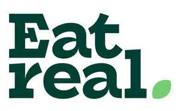

Trade Mark Journal No.2025/026 27 June 2025
UK00004183958 3 April 2025 (29,30)

- Class 29
- Preserved, frozen, dried and cooked fruits and vegetables; edible seeds; jellies, jams, compotes; eggs, milk and milk products; milkshakes; edible oils and fats; potato crisps; potato chips; crisps and potato based snacks; savoury snack foods; nuts; dips for snack foods; soups; potato puffs; fruit snack bars; nut snack bars; fruit and/or nut balls; dehydrated fruit snacks; dried fruit mixes; nut based food bars; nut spreads; vegetable based snack foods; banana chips; vegetable chips; coconut chips; fruit chips; potato sticks; seeds; snack dips; almonds; fruit and nut bars; extruded snacks, namely extruded potato snacks; texturised vegetable proteins; lentil curls, hummus chips, lentil chips; crisps.
- Class 30
- Coffee, tea, cocoa, sugar, rice, tapioca, sago, artificial coffee; flour and preparations made from cereals, bread, pastry and confectionery; confectionery and desserts, cookies, biscuits; popcorn; chocolate; chocolate confectionery; chocolate coated confectionery; ices; ice cream; ice confectionery; ice cream products; ice cream powders; ice for refreshment; frozen ices; ice lollies; sorbets; sherbets (water ices); honey, treacle; yeast; baking-powder; salt, mustard; vinegar, sauces (condiments); spices; ice; muesli; muesli bars; cereals; cereal based foodstuffs; biscuits; chips and crisps made from cereal products; popcorn bars; fruit sauces; sandwiches; pasta dishes; syrups for food; coated nuts (confectionery); crackers; rice clusters; crisped rice clusters; nut clusters; cereal clusters; corn curls; cheese curls; pitta chips; corn chips; tortilla chips; jelly; corn clusters; half pop popcorn; sesame sticks; rice sticks; bread sticks; bread snacks; coated popcorn; cereal bars and energy bars; coffee beans; high protein cereal bars; maize based snacks; pitta breads; pretzels; rice crackers; sweets; chewing gum; biscuit thins; cracker thins; rice cakes; corn cakes; cheese puffs; puffed corn snacks; quinoa puffs, corn puffs; rice puffs.
Eat Real Ltd
Representative: Boult Wade Tennant LLP